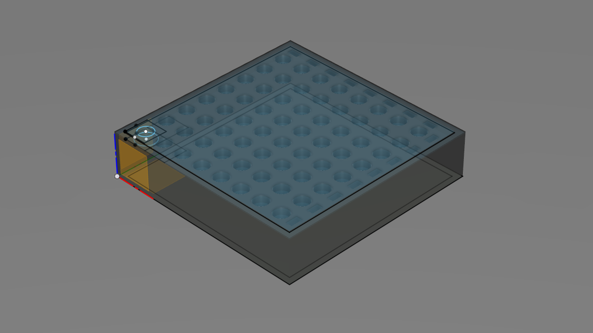

HARDWARE
TL;DR: 3D printed a tube rack to reduce the time I spend doing tedious and error prone wet-lab work.
 Problem: Methodologies such as Polymerase Chain Reaction (PCR) can require sampling from many standard sized Eppendorf tubes to a commonly used 96-well or 384-well format. Many downstream methodologies align with this 96 well format, yet the default tube holder arrangement for Eppendorf tubes does not allow for multichannel usage. This can lead to tedious and error prone workflows when there are many Eppendorf tubes that require sampling.
Problem: Methodologies such as Polymerase Chain Reaction (PCR) can require sampling from many standard sized Eppendorf tubes to a commonly used 96-well or 384-well format. Many downstream methodologies align with this 96 well format, yet the default tube holder arrangement for Eppendorf tubes does not allow for multichannel usage. This can lead to tedious and error prone workflows when there are many Eppendorf tubes that require sampling.
 Solution: I designed a tube rack that would allow for multichannel sampling of Eppendorf tubes into a 96 well format. Staggering tips on a multichannel allows for sampling from adjacent Ependorfs into every-other 96-well tube, or every 4, 384-well tubes. Zig-zag organization schemes of samples and various other strategies allow for a wide variety of applications with an increased throughput while also providing additional redundancies for common errors such as skipping or repeating samples.
Optimization: The first PLA print failed at the walls of the tube rack and experienced some bowing due to unevenly heated printer bed. The second print completed but still exhibited curved corners at the surface that was on the print bed. The third print used PETG plastic instead of PLA, and the print bed layers were replaced with a mirror to allow for easier heat penetration and a shiny finish to the tube rack's top surface (it is printed upside-down). That third version is the tube rack imaged below.


More optimization, troubleshooting and DIY projects to come.